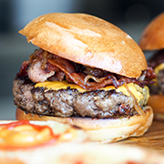
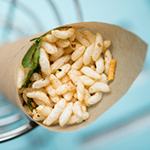
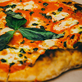
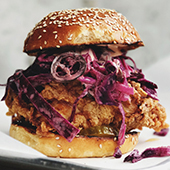
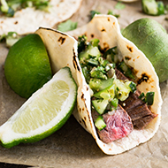

Classic American Fare
Find everything you would expect from a gourmet burger joint right off of this truck. Choose your base from 100% angus beef, a 50/50 mix of beef and bacon, buffalo, ostrich, or veggie, then personalize your burger with your choice of over 25 toppings and add-ons.
New York Style Deli

Enjoy New York Style deli sandwiches, burgers, wraps, and more in the California desert! Whatever your Gotham craving, they have it. Try a Reuben, a Rachel, or just build your own from their extensive selection of premium deli meats, cheeses, and toppings.
Asian Street Fusion
Have some fun with this unique take on Japanese steet cuisine. Their menu consists of familiar sushi combinations, as well as more adventurous items such as spicy tuna nachos and salmon ceviche tacos, all served up in a convenient on-the-go fashion.
Wood Fired Pizza
Delight to the smells and sights of traditional Neapolitan wood-fired cooking while watching their Pizzaiolo create dinner from start to finish! The pizza is fragrant, thin, and soft with a slightly crispy crust, and is made with the best imported flour and tomatoes from Italy.
Southern Fried Comfort
Authentic New Orleans Cajun, classic southern soul food, and barbeque fusion! Their Our menu includes crab cakes, crawfish etoufee, gumbo, jambalaya, red beans & rice, and po' boys, and the world-famous southern fried chicken sandwich with red cabbage vinegar slaw.
Mexicali Street Tacos
Inspired by the SoCal food truck scene, this food is made-to-order from the freshest ingredients possible. Whether its their signature tacos, burritos, carne asada fries, or any of their incredible food, you'll be sure to love Mexicali Street Tacos!